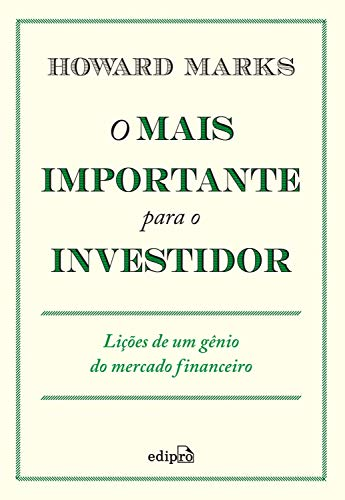

Baseando-se nos segredos de sucesso dos antigos babilônicos os habitantes da cidade mais rica e próspera de seu tempo, George S. Clason mostra soluções ao mesmo tempo sábias e muito atuais para evitar a falta de dinheiro, como não desperdiçar recursos durante tempos de opulência, buscar conhecimento e informação em vez de apenas lucro, assegurar uma renda para o futuro, manter a pontualidade no pagamento de dívidas e, sobretudo, cultivar as próprias aptidões, tornando-se cada vez mais habilidoso e consciente.
Este livro se propõe a dar um panorama geral a respeito do que são ações de uma empresa e também como o seu valor pode ser influenciado por fatores externos e internos. Há também uma tentativa de situar os investidores quanto a suas estratégias de compra e venda de ações, diferenciando entre o investidor experiente e o novato. Fazer fortuna com ações, por conseguinte, é algo possível que deve ser muito bem planejado, e que depende bastante de com qual objetivo um investidor adquire um papel.
Maior consultor de investimentos do século XX, Benjamin Graham ensinou e inspirou milhares de pessoas ao redor do mundo. Seu conceito de “valor de investimento” protege os investidores de cometer erros substanciais e os ensina a desenvolver estratégias de longo prazo. Isso fez com que O investidor inteligente se tornasse a bíblia do mercado de ações desde sua primeira publicação, em 1949. A partir daí, as evoluções do mercado provaram a sabedoria das estratégias de Graham.
Howard Marks, fundador da Oaktree Capital, é reconhecido mundialmente por sua incrível habilidade no mercado de ações. Depois de quatro décadas se destacando como um dos gestores que mais deu retorno na Bolsa de valores americana, ele partilha sua estratégia vencedora sobre como avaliar os melhores papéis e aplicar o seu dinheiro de maneira inteligente. Este volume único reúne dicas valiosas para o investidor experiente e também para quem está iniciando os primeiros passos no mercado financeiro. Descreve a chave para o investimento de sucesso e alerta sobre as armadilhas que podem destruir o capital. Traz lições valiosas relacionadas à tomada de decisão e às gestões de risco, analisa com sabedoria os ciclos de mercado e mostra como é possível obter ótimos retornos por meio de uma estratégia calculada.
Para Peter Thiel, cofundador do PayPal e investidor em diversas startups, o próximo Bill Gates não criará um sistema operacional. O próximo Larry Page ou Sergey Brin não desenvolverá um mecanismo de busca. E o próximo Mark Zuckerberg não criará uma rede social. Se você está copiando essas pessoas, não está aprendendo com elas. É mais fácil copiar um modelo que criar algo novo. O progresso vem do monopólio, não da competição. Se você faz o que nunca foi feito e consegue fazer melhor do que qualquer um, tem um monopólio - e qualquer negócio só é bem-sucedido na medida em que é um monopólio. Mas quanto mais você compete, mais se torna parecido com todo o resto. De zero a um não oferece fórmula para o sucesso. O paradoxo de ensinar empreendedorismo é que tal fórmula não pode existir. Como cada inovação é única, nenhuma autoridade consegue prescrever em termos concretos como ser inovador. Toda inovação vai de 0 a 1. Peter Thiel apresenta uma visão otimista do futuro do progresso e uma maneira original de pensar sobre inovação, ensinando você a fazer perguntas que o levem a encontrar valor em lugares inesperados.